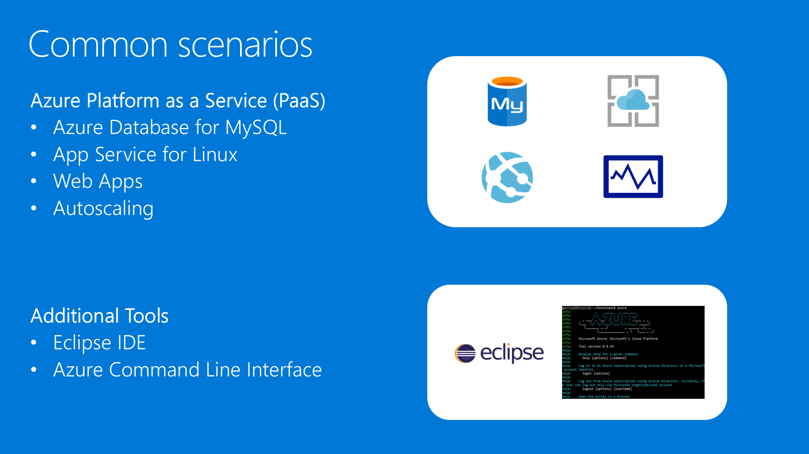

OSS DevOps
Whiteboard design session student guide
April 2018
Information in this document, including URL and other Internet Web site references, is subject to change without notice. Unless otherwise noted, the example companies, organizations, products, domain names, e-mail addresses, logos, people, places, and events depicted herein are fictitious, and no association with any real company, organization, product, domain name, e-mail address, logo, person, place or event is intended or should be inferred. Complying with all applicable copyright laws is the responsibility of the user. Without limiting the rights under copyright, no part of this document may be reproduced, stored in or introduced into a retrieval system, or transmitted in any form or by any means (electronic, mechanical, photocopying, recording, or otherwise), or for any purpose, without the express written permission of Microsoft Corporation.
Microsoft may have patents, patent applications, trademarks, copyrights, or other intellectual property rights covering subject matter in this document. Except as expressly provided in any written license agreement from Microsoft, the furnishing of this document does not give you any license to these patents, trademarks, copyrights, or other intellectual property.
The names of manufacturers, products, or URLs are provided for informational purposes only and Microsoft makes no representations and warranties, either expressed, implied, or statutory, regarding these manufacturers or the use of the products with any Microsoft technologies. The inclusion of a manufacturer or product does not imply endorsement of Microsoft of the manufacturer or product. Links may be provided to third party sites. Such sites are not under the control of Microsoft and Microsoft is not responsible for the contents of any linked site or any link contained in a linked site, or any changes or updates to such sites. Microsoft is not responsible for webcasting or any other form of transmission received from any linked site. Microsoft is providing these links to you only as a convenience, and the inclusion of any link does not imply endorsement of Microsoft of the site or the products contained therein. © 2018 Microsoft Corporation. All rights reserved.
Microsoft and the trademarks listed at https://www.microsoft.com/en-us/legal/intellectualproperty/Trademarks/Usage/General.aspx are trademarks of the Microsoft group of companies. All other trademarks are property of their respective owners.
Contents
Migrate an online health food supplier from a hosted environment to Azure and fully embrace modern DevOps tools, investigate PaaS Services and leverage their deep knowledge of Eclipse development tools and its integration with Azure.
Attendees will be better able to deploy complex OSS workloads into Azure PaaS using Azure App Services as well as the following tasks:
Deployment and integration of Azure Marketplace products from Partners such as Bitnami for Jenkins
Update Azure App Services using providers such as Github and Dropbox
Outcome
Analyze your customer’s needs. Time frame: 15 minutes Directions: With all participants in the session, the facilitator/SME presents an overview of the customer case study along with technical tips. 1. Meet your table participants and trainer 2. Read all of the directions for steps 1–3 in the student guide 3. As a table team, review the following customer case study
Trey Research is an online vitamins seller that has a presence mainly in the United Kingdom and other countries/regions in Europe. They want to expand into other parts of the world starting with Asia and will soon be setting up distribution centers for their vitamins there. They have no retail stores and thus all their business comes through their website. SEO (Search Engine Optimization) is extremely important to them as is their user website experience with a heavy focus on availability and performance.
The company currently has two application teams: Development for their websites and Operations for deployments and backend servers. These are all hosted in a commercial data center. The teams have a great deal of experience in developing applications in PHP and WordPress for the LAMP stack (Linux, Apache, MySQL, and PHP). What they lack is the operational expertise and maturity to maintain their applications properly. They struggle with development and design practices, deployments, configuration management, and scaling their application to meet busy seasonal periods.
Current situation
Trey Research is currently running 32 web applications on a single physical 64 core server with 256GB of RAM and a multi-terabyte raid array. To facilitate fast configurations of the server, they are running Plesk which allows them to create and configure new domains rapidly.
These applications are running a combination of PHP, node.js, and WordPress. The application code is written and maintained by the developers in house, but the WordPress content that applies the look and feel to the application is maintained by a marketing firm.
On the Data Tier, Trey Research has a single MySQL database server housing several databases ranging in size from 1 GB to 50 GB. The server has 24 cores with 128GB of RAM, and it is a single point of failure. If the database or the server suffers from an outage, the sites that depend on MySQL go down hard. It is a huge customer satisfaction issue, and there have been multiple extended outages where MySQL was down for more than an hour over the past few months. Every hour the site is down costs Trey Research 100,000 EUR.
During the summer periods or extended marketing campaigns, Trey Research is finding they run out of server capacity, and some of their potential web customers experience timeouts. They also find that much of the static content such as PDF product flyers are taking an extended period to download from more remote regions such as South East Asia leading to poor user feedback. As they move into Asia, it is a huge concern, as they do not currently have a point of presence there.
Ursula Karalov, VP of Sales for Trey Research Vitamins states, “We just cannot afford to lose anymore sales due to our website being down or slow.” She also mentioned their marketing firm determined a large number of shopping carts abandon rates correlate to slow access (greater than 2 seconds) to PDF product descriptions.
Development practices and Site Operations
The CTO, Andrew Cross, wants to enable much faster deployment times for their applications and ensure that all servers in the farm have the same configurations and files deployed. “When we deploy our applications, the team manually FTP’s files into our production environment”. This process makes it quite difficult and prone to errors given the different environments maintained including Test, Staging, and Production. Mr. Cross says, “This complexity means that the team is reluctant to rapidly implement hotfixes and minor releases. So right now, we release only once a quarter even when we know there are bugs that could and should be fixed in-line with our three-week sprints and biweekly bug bashes.”
The in-house developers primarily use Eclipse for their development IDE. They take advantage of a combination of GitHub repos to store code and a Jenkins server with multiple nodes to do builds. They have yet to implement any deployment pipelines, as they do not have a configuration management infrastructure. It means that once Jenkins does their builds, they are rolled out manually to whichever environment they are destined for and that information is very prone to human mistakes and oversights.
On the other hand, the marketing firm writes their code in markdown and provides updates to Trey Research via Dropbox, which has been a huge pain point. “It is just another place for things to get confusing with a complex folder structure that seems to be a moving target,” says Tim LaMar, Lead Systems Administrator from Trey Research’s Operations. “We have to look for emails from either the Project Manager or their Dev team to know that there is an update coming our way for the site.” Tim and the rest of the Operations team must then go find and manually move the code into production. The Operations team is constantly being bombarded with trouble-tickets from the marketing firm for broken links, out of date PDFs, and embargoed code being live on the site when it should not yet be deployed.
Their test environment consists of developers testing code changes locally, as well as checking in changes to a GitHub repository. To deploy, Trey Research just pulls the latest bits onto the production server. It has led to numerous outages because of environmental differences on the developer’s workstations versus what is on the production server.
The Trey Research CTO is open to taking advantage of Azure as a platform and wants his team to focus on what they do best, and that is to write good code. He knows the Operations team struggles and finding solutions to these issues using computer science instead of herding cats is top of mind. “We must get to a point where all we do is code. If Azure and these DevOps tools can come together to make that happen, then I am going with Microsoft.”
Andy has also expressed that if the MySQL database goes down again, it will be a resume generating event for many people on the team including him, so he has a keen interest in having better database availability design.
Existing www.treyresearch.com web application solution

Deploy and easily scale their web applications written in PHP, node.js, and WordPress.
A resilient and scalable MySQL backend configured to support and active-passive deployment.
A simpler method of deploying and validating code from their test environment taking advantage of their investments in Jenkins, Git, and Dropbox
No longer wants to manage build server environment on-premise.
Ensure that existing Development tools are retained and compatible with any new solution.
Avoid timeouts during busy periods while browsing their product catalog.
Decrease the amount of time needed for remote users in areas like Asia to download graphic-heavy, static content and product catalogs that are PDFs.
Lowering the total cost of ownership of the entire solution by minimizing the management surface area required for the solution
Why use Microsoft Azure? Surely, Azure is a Windows only cloud, because Microsoft sells the Windows operating system.
What does Microsoft know about PHP and the LAMP stack? They cannot offer support of these things whereas I know other companies that have successful deployments of this on Amazon.
If we move to the cloud, will we always be ready to take our customers’ orders?
We have a few settings in our php.ini and some of the applications use PHP extensions. They are critical to their functionality. Can we make custom settings and enable extensions if we use Azure Web Apps?
We primarily use Eclipse for our development, and that is what our team uses to debug issues. Can we debug our applications using Eclipse against Azure Web Apps?
We cannot move to Microsoft SQL Server, and we do not want to deal with the issues of the MySQL VMs anymore.


Outcome Design a solution and prepare to present the solution to the target customer audience in a 15-minute chalk-talk format.
Time frame: 60 minutes
Business needs
Directions: With all participants at your table, answer the following questions and list the answers on a flip chart. 1. Who should you present this solution to? Who is your target customer audience? Who are the decision makers? 2. What customer business needs do you need to address with your solution?
Design Directions: With all participants at your table, respond to the following questions on a flip chart.
Web app infrastructure and network designs (Operations)
Using the features of Azure and the requirements from the customer, design the application infrastructure and network for Trey Research. Lowering the total cost of ownership of the entire solution by designing for the least complexity and management/updating should be considered for the architecture. The use of VMs should be minimized to lessen the burden of management on the Operations team.
Make sure that your design covers the following items:
Application
Task: Design a scalable geo-distributed platform for the Trey Research web applications written in PHP, node.js, and WordPress.
The solution should scale automatically and be resilient to failures.
Load times in locations around the world should be lessened as compared to today, and static and large files be placed as close to the user as possible.
Ensure to document (at a high-level), how the new design can handle custom settings in their php.ini and the use of PHP extensions.
Database
Task: Design a resilient and scalable MySQL backend configured to span geographically distributed datacenters, and it must support an active-passive configuration.
Network
Task: Design a hybrid network (at a high-level) that will allow you to meet all the customer requirements and support your design for moving Trey Research to Azure.
Design a virtual network in Azure and establish hybrid connectivity between Trey Research on-premises to Azure.
Include Azure Networking features in the full design to ensure users connecting to the Web Application are routed to the front-end with the least number of hops, and the load is balanced across these servers
DevOps in Azure implementation (Development)
Using the features of Azure and the requirements to use Dropbox, Git, and Jenkins as a part of the solution, design a DevOps pipeline workflow the Development team will use to move from Test, Staging, to Production. Make sure your design covers the following items:
Task: Document the workflow at a high-level to be used to implement a DevOps based Continuous Integration (CI) and Continuous Delivery/Deployment (CD) methodology at Trey Research.
Where is code checked in, and how does the code get built. Then, how does it deploy to the Site? Make sure to consider not only the in-house developers, consider the marketing vendors’ code. Note that the marketing team is not going to move from using Dropbox.
Design a “slotting” methodology using at least three slots for Test, Staging, and Production? How does code land on each of these sites? Show the full workflow from code check-in, build, deployment, and then promotion to production.
Task: Document how Trey Research can continue to use Eclipse as their development environment.
Document how the tools are compatible with the new design.
Determine how their client can debug issues. Can we debug our applications using Eclipse against Azure Web Apps?
Document how Trey Research could build nonproduction Azure Web Apps that are “proof of concepts” so they can implement their alpha code directly to Azure by-passing the CI/CD infrastructure.
Prepare
Directions: With all participants at your table:
Identify any customer needs that are not addressed with the proposed solution
Identify the benefits of your solution
Determine how you will respond to the customer’s objections
Prepare a 15-minute chalk-talk style presentation to the customer.
Outcome
Present a solution to the target customer audience in a 15-minute chalk-talk format.
Time frame: 30 minutes
Presentation
Directions: 1. Pair with another table. 2. One table is the Microsoft team and the other table is the customer. 3. The Microsoft team presents their proposed solution to the customer. 4. The customer makes one of the objections from the list of objections. 5. The Microsoft team responds to the objection. 6. The customer team gives feedback to the Microsoft team. 7. Tables switch roles and repeat Steps 2–6.
Time frame: 15 minutes